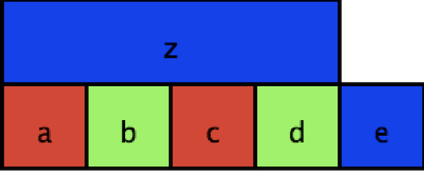

Lecture 9: SAT
1 Purpose
Introduce SAT problem, both in boolean form & show reduction (of something).
2 Outline
The boolean satisfiability problem is quite simple to state.
Given a formula in propositional logic, that is, built with variables (e.g., P,Q,R,\ldots), operators (usually just \wedge,\vee,\neg), and parentheses, is there a truth assignment that makes the formula true?
A naive approach is simple: go through every possible assignment of variables, and see if any satisfy the formula. While this is obviously correct, it is also (nearly as obviously), exponential, since there are 2^n possible assignments (each variable has two possible assignments, so if there are n variables, 2 * 2 * \ldots 2 = 2^n).
For large formulas with lots of variables, this is clearly a bad idea. So why are we talking about this?
Well, two things come together to make SAT probably the most important problem in computer science.
First, an old theorem, proved independently in the early 1970s by Stephen Cook and Leonid Levin, showed that any problem in the complexity class NP could be reduced, or translated, to SAT in polynomial time.
It is thus the quintessential hard problem, but also, incredibly general, and if you have taken or do take a theory class, probably one of the things you will do is reduce some other problem to SAT.
Example reduction
Consider a map coloring. If you want to assign different colors to adjacent squares on a map.

You could express this problem as a SAT problem by defining variables for whether each labeled square is colored red, blue, or green. Then, you need to not only show that a square can only be one color, but that each pair of adjacent squares, you could add a clause that says that the two squares cannot be the same color.
We can express this by the following. First, we show that we assign exactly one color to each square, by showing that one of the three variables (a_r, a_g, a_b) is true, but not more than one (by ensuring that for every pairing, at least one is false). \begin{array}{l} (a_r \vee a_g \vee a_b) \wedge (\neg a_r \vee \neg a_g) \wedge (\neg a_r \vee \neg a_b) \wedge (\neg a_g \vee \neg a_b) \\ \end{array}
We have to do this for each of our squares. This amounts to allowing an assignment, but doesn’t yet cover the adjacency requirement.
\begin{array}{l} (b_r \vee b_g \vee b_b) \wedge (\neg b_r \vee \neg b_g) \wedge (\neg b_r \vee \neg b_b) \wedge (\neg b_g \vee \neg b_b) \wedge \\ (c_r \vee c_g \vee c_b) \wedge (\neg c_r \vee \neg c_g) \wedge (\neg c_r \vee \neg c_b) \wedge (\neg c_g \vee \neg c_b) \wedge \\ (d_r \vee d_g \vee d_b) \wedge (\neg d_r \vee \neg d_g) \wedge (\neg d_r \vee \neg d_b) \wedge (\neg d_g \vee \neg d_b) \wedge \\ (e_r \vee e_g \vee e_b) \wedge (\neg e_r \vee \neg e_g) \wedge (\neg e_r \vee \neg e_b) \wedge (\neg e_g \vee \neg e_b) \wedge \\ (z_r \vee z_g \vee z_b) \wedge (\neg z_r \vee \neg z_g) \wedge (\neg z_r \vee \neg z_b) \wedge (\neg z_g \vee \neg z_b) \\ \end{array}
How do we handle adjacency? Well, we want to know that if two squares (say, a and b) are adjacent, then they cannot be the same color. So, for each color c, we add a clause \neg a_c \vee \neg b_c. Why does that work? If a_c is true, that means a has been colored with color c, which means \neg a_c is false, so for the clause to be satisfied, \neg b_c has to be true, which means that b_c must be false, and thus b cannot be colored with color c.
This means the rest of our complete formula is:
\begin{array}{l} (\neg a_r \vee \neg b_r) \wedge (\neg a_g \vee \neg b_g) \wedge (\neg a_b \vee \neg b_b) \wedge \\ (\neg a_r \vee \neg z_r) \wedge (\neg a_g \vee \neg z_g) \wedge (\neg a_b \vee \neg z_b) \wedge \\ (\neg b_r \vee \neg c_r) \wedge (\neg b_g \vee \neg c_g) \wedge (\neg b_b \vee \neg c_b) \wedge \\ (\neg c_r \vee \neg d_r) \wedge (\neg c_g \vee \neg d_g) \wedge (\neg c_b \vee \neg d_b) \wedge \\ (\neg c_r \vee \neg z_r) \wedge (\neg c_g \vee \neg z_g) \wedge (\neg c_b \vee \neg z_b) \wedge \\ (\neg d_r \vee \neg e_r) \wedge (\neg d_g \vee \neg e_g) \wedge (\neg d_b \vee \neg e_b) \wedge \\ (\neg d_r \vee \neg z_r) \wedge (\neg d_g \vee \neg z_g) \wedge (\neg d_b \vee \neg z_b) \\ \end{array}
Now, if we can find a satisfying assignment to this formula, we know that we can color the map. And in particular, the coloring will be given by the assignment: if a_r is true, a is red, if b_g is true, so b is green, etc.
It’s important to note, of course, that there may be many satisfying assignments, and the solver may only find one of them, or report that no such assignment is possible.
Reduction for properties about programs
While in theory SAT can be used to express an incredibly wide variety of properties, one of the most important practical uses is to express properties about programs or systems. One mechanism, called Bounded Model Checking, involves taking a program, transforming it into a version that works for some finite input k, and then checking some property about that program.
That can result in three possibilites: the property may be violated (in which case, a bug has been found for small input), the finitization fails (i.e., if a loop was unrolled n times, but that wasn’t sufficient for even the small input), or no problem is detected. In the first case, a bug has been found. In the second case, the program errors because of the loop invariant, but not because of buggy behavior. However, since only a finitized version of the program was run, it’s possible that there still exist bugs on larger inputs. In the last case, no bug is detected, and so we know no bugs exist for all small inputs, but may still exhibit bugs on larger inputs than we test on. One of the hypotheses of Bounded Model Checking is that if the program is correct for small inputs, it will be correct for larger inputs.
Let’s see an example of how to do this.
Consider the classic algorithm (from Euclid) to calculate the greatest common denominator.
(define (my-gcd a b)
(cond [(zero? b) a]
[else (my-gcd b (modulo a b))]))
(check-expect (my-gcd 10 2) 2)
(check-expect (my-gcd 37 12) 1)
(check-expect (my-gcd 270 192) 6)
Now, assertions of correctness vary, and we will usually give better ones, but for this example, let’s just assert that the result is a positive number, no greater than the smaller of the two numbers.
i.e., \forall x, y. 0 < gcd(x, y) \leq \min(x, y).
The bounded model checking approach to this involves translating the program itself into SAT, which first involves translating the program itself into a formula. Part of the "bounded" part is that we need to have a finite unrolling of any loops (or recursive calls). Here, we’ll just unroll twice (in realistic settings, we’d go much further):
(define (my-gcd-unrolled a b)
(cond [(zero? b) a]
[else (let [(a b)
(b (modulo a b))]
(cond [(zero? b) a]
[else (let [(a b)
(b (modulo a b))]
(cond [(zero? b) a]
[else (error "Did not unroll far enough"
" a = "
a
" b = "
b)]))]))]))
(check-expect (my-gcd-unrolled 10 2) 2)
(check-expect (my-gcd-unrolled 37 12) 1)
(check-error (my-gcd-unrolled 270 192))
Notice we now have an error that we’ll hit if for a given input we need to go further than two recursive calls.
Now, we need to fully translate this into a formula, which involves removing control flow. What we are technically doing is translating into what is called Static Single Assignment (SSA), which is a pretty common intermediate form for compilers, as it is quite amenable to all sorts of analyses. There is a bit more to SSA, but this is a close approximation:
(define (rem n m)
(if (zero? m)
n
(modulo n m)))
(define (my-gcd-translated a b)
(letrec [(g (zero? b))
(a0 b)
(b0 (rem a b))
(g0 (zero? b0))
(a1 b0)
(b1 (rem a0 b0))
(g1 (zero? b1))
(_ (if (and (not g)
(not g0)
(not g1)) (error "loop unroll") ""))
(r0 (if g0 a0 a))
(r (if g1 a1 r0))]
r))
(check-expect (my-gcd-translated 10 2) 2)
(check-expect (my-gcd-translated 37 12) 1)
(check-error (my-gcd-translated 270 192))
The key here is that rather than having nested control flow, we now have a formula that computes
the result. Some of you might find this rather odd: we are potentially doing lots more work than
we need to, but the point is to translate the computation into a formula, not to construct an
efficient algorithm! A formula doesn’t have a defined evaluation —
At this point, we can start to translate to a logical formula:
\begin{array}{l} g = b \equiv 0 \wedge \\ a0 = b \wedge \\ b0 = \text{rem}~ a~ b \wedge \\ g0 = b0 \equiv 0 \wedge \\ a1 = b0 \wedge \\ b1 = \text{rem}~a0~b0 \wedge \\ g1 = b1 \equiv 0 \wedge \\ \neg (\neg g \wedge \neg g0 \wedge \neg g1) \wedge \\ r0 = \text{ite}~g0~a0~a r = \text{ite}~ g1~ a1~ r0 \\ r >= 0 \wedge r <= a \wedge r <= b \\ \end{array}
Now, the issue that you might have noticed is that our formula involves numbers: not just equalities, but remainders and inequalities. The way this is handled in bounded model checking, which we are not going to do, is to represent numbers bit by bit (so a single variable a, if it is 8 bits, would be represented as a_0, a_1, \ldots, a_7). Then, we can represent, as formulas, operations for inequality, addition, multiplication, etc. The representation are similar to at least idealized versions of hardware. You can imagine that the formulas can become quite large, but with the recent success of scaling SAT solvers, this is not quite the problem that it used to be. However, being able to avoid this is the main motivation for SMT solvers, what we’ll talk about next time, and what we’ll actually experiment with using.